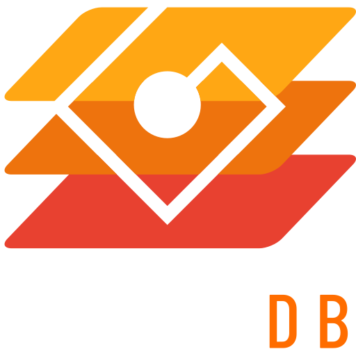

FIWARE Orion 互換の
フルマネージド
Context Broker サービス
NGSIv2 ＋ NGSI-LD デュアルプロトコル／AI・地理空間ネイティブ／エンタープライズ認証認可／運用レス

GeonicDB が実現する近未来のスマートシティ
街のいまを「状態の集合体」として束ねる、スマートシティのための都市 OS。
国際標準に準拠した Context Broker
スマートシティ・IoT のコンテキスト情報を、相互運用可能な形で表現・管理する国際標準。GeonicDB は NGSI-LD と FIWARE NGSIv2 を 1 エンジンで両対応します。
むずかしいことや面倒なことはAIにおまかせ
MCP サーバーや CLI があるため、各種設定やデータの作成、アプリの開発を AI に自然言語で頼むことができます。
AI サービスは別途ご契約いただく必要があります。
NGSIv2 と NGSI-LD に対応
1 つのブローカーで NGSIv2 と NGSI-LD の両方の標準 API に対応。用途に合わせてどちらの形式でもエンティティを取得できます。下のボタンで実際の API レスポンスを取得します。
GET /v2/entities/{id}取得を待機中…
GET /ngsi-ld/v1/entities/{id}取得を待機中…
場所でデータを絞り込む
あらゆる時系列データを過去にさかのぼって取得
GeonicDB はすべての変化を履歴として保持。Temporal API で「いつ・どの瞬間の状態だったか」を期間指定で問い合わせられます。下のスライダーで時刻をさかのぼれます。
条件がそろえば、あとは自動
ReactiveCore Rules は GeonicDB 内蔵のルールエンジン。エンティティの変化を監視し、条件に一致すると通知・Webhook・属性更新などのアクションを自動実行します。
外部のルールエンジンやワークフロー基盤を別途構築せず、ブローカー内で完結。
データの変化をリアルタイムに通知
GeonicDB はサブスクリプション機能を内蔵。エンティティの作成・更新・削除を購読しておくと、変化した瞬間に WebSocket で全クライアントへ即時プッシュ、または Webhook で外部システムへ通知します。ポーリングは不要です。
GeonicDB で一番試したい機能は？
こんな現場にフィットする
スマートシティ / 自治体
交通・駐車・環境モニタリング。空間 ID・CADDE で日本市場に適合。
AI 駆動 IoT 分析
MCP 経由でエージェントが自律的にデータ投入・検索。自動バリデーション。
オープンデータ公開
DCAT-AP / CKAN ハーベスタ連携でポータルへ自動収集。
マルチテナント SaaS
XACML・IP 制限・JWT RBAC で PEP プロキシ不要。
地図・位置情報アプリ
ベクトルタイル直結でカスタム描画コード不要。
LLM アシスタント付き Web
SDK 型定義 + MCP で Claude / Cursor から開発。
機能の充実度で大きく差がつく
| 機能 | GeonicDB | FIWARE Orion |
|---|---|---|
| NGSIv2 / NGSI-LD | ◎ 両対応（1 エンジン） | ○ 製品が分離 |
| Temporal API | ◎ フル | △ 限定的 |
| WebSocket / ベクトルタイル / 空間 ID | ◎ | ✕ |
| 組込み JWT / RBAC / XACML | ◎ | ✕ プロキシ別途 |
| 外部 OIDC / IP 制限 / DPoP | ◎ | ✕ |
| DCAT-AP / CKAN / CADDE | ◎ | ✕ |
| スケーリング | オートスケール | 手動 |
出典: docs/FIWARE_ORION_COMPARISON.md。Orion はオンプレ／マルチクラウド／FIWARE スタック実績で優位。
Appendix
技術詳細・補足データ・参考情報
全機能カタログ ①
- エンティティ CRUD（一覧・ページング・フィルタ・ソート）
- バッチ操作
POST /v2/op/update（append/update/delete/replace） - 属性レベル操作（get/set/delete・値のみ）
- 型管理（型一覧・メタデータ）
- サブスクリプション（Webhook/MQTT・条件・スロットリング）
- レジストレーション／フェデレーション
- 作成／取得／置換(PUT)／マージ(PATCH)／属性追加
- マルチ属性（
datasetId） - バッチ create/upsert/update/merge/delete/purge
- サブスクリプション（cooldown・showChanges・指数バックオフ）
- Context Source Registration（CSR）
- 型・属性・JSON-LD コンテキスト管理
- 時系列データの作成・取得・バッチ操作
- 時間演算子
timerel（after/before/between）・lastN - 集約
aggrMethods（count/sum/avg/min/max/stddev…） temporalValues簡易表現- MongoDB Time Series 格納・プラン別上限
- Geo クエリ
georel（near/within/intersects/…） - 空間 ID（ZFXY）・
spatialIdDepth階層 - CRS 変換（EPSG:4326／3857・URN）
- GeoJSON 出力（
options=geojson） - ベクトルタイル（TileJSON 3.0・自動クラスタリング）
- Smart Data Models（8+ ドメイン／50+ 型）
- カスタムデータモデル（JSON Schema 自動生成・検証）
- データカタログ（DCAT／CKAN・全文検索）
- CADDE 連携（ブローカー間データ交換）
- WebSocket ストリーミング（JWT/APIKey/DPoP・フィルタ・自動再接続）
- MQTT サブスクリプション（3.1.1／5.0・QoS・TLS・retain）
- ReactiveCore Rules（CEL 条件・アクション・クールダウン）
全機能カタログ ②
- レジストレーション（外部プロバイダ登録・転送）
- CSR／Subscription（NGSI-LD・ループ検知・警告伝播）
- エンティティマップ（クエリ結果キャッシュ）
- AI Plugin Manifest（
/.well-known/ai-plugin.json） llms.txt／tools.json／ OpenAPI- MCP サーバ（
POST /mcp）・A2A（POST /a2a） - 統一 5 ツール（entities/batch/temporal/config/admin）
- JavaScript SDK（
@geolonia/geonicdb-sdk） - 公式 CLI（
geonic）— 管理・認証・JSON/YAML 出力 - OpenAPI／Swagger（
/openapi.json・/api.json）
- マルチテナンシー（Fiware-Service／NGSILD-Tenant）
- サービスパス階層・クォータ＆レート制限
- High Availability／フェイルオーバー（マルチリージョン）
- ヘルスチェック・監視（Prometheus／X-Ray）
- スナップショット・バックアップ
- 文字列長（ID/型/属性名 256・クエリ 2000）
- 配列要素数（attrs/pick/omit 各 50・バッチ 100）
- 数値境界（throttling・timeout・lastN）
- ネスト深度 10・ReDoS 対策（正規表現 200 字）
- 全入力を Zod スキーマで検証
※ 出典: GeonicDB プロダクトリファレンス「全機能カタログ（網羅的）」
管理機能
- テナントの作成／更新／削除・有効化／無効化
- クォータ・使用量（取得／更新・履歴）
- per-tenant IP 制限（allowlist）
- ユーザー CRUD・有効化／無効化・ロック解除
- テナントへの所属追加／削除・所属一覧
- パスワードポリシー（最小 12 文字）
- API キー（作成／更新／失効／リフレッシュ）
- OAuth クライアント（作成／更新／Secret 再生成／削除）
- 本人用
/me配下のキー・クライアント・ポリシー
- ポリシー CRUD・有効化／無効化
- ポリシーセット・優先度・deny-fence
- XACML エクスポート／インポート
- 「いつ・誰が・何を」を構造化記録（
level=AUDIT） - 対象: エンティティ／バッチ・購読・管理操作・ログイン／トークン更新・特権読み取り
- 記録項目: actor(id/email/role)・tenant・servicePath・resourceId・statusCode・clientIp・correlator/traceId
LOG_LEVEL=SILENTでも必ず出力（コンプライアンス用途）
- メトリクス（
/admin/metrics・API 呼び出し）・Prometheus・OpenTelemetry/X-Ray - ヘルスチェック（
/health・/health/ready） - テナント削除＋暗号消去（crypto-shred・KMS 鍵失効）＋削除レポート
- CADDE 設定管理
信頼性
- サーバーレスで自動スケール
- 冗長構成＋マルチリージョン
- 自動フェイルオーバー 10–30 秒
- RTO < 5 分 / RPO < 1 分
認証・認可
- 5 種の認証 — JWT・API Key・OAuth 2.0・OIDC 外部 IdP・DPoP（RFC 9449）
- XACML 3.0 単一レイヤ — 5 ロール × 属性ベースのきめ細かいポリシー
- per-tenant IP 制限・監査ログ・トークン失効
- PEP プロキシ（Wilma 等）を別途立てる必要がない
Policy: owner-only-access
target: entity.owner == ${subject.userId}
rules:
- Permit read if owner
- Permit write if owner
- Deny * otherwise
# 所有者のみがアクセス可能セキュリティ
クエリで使えるパラメータ
limit取得件数（既定 20・最大 1000）offsetオフセット（最大 10000）count総件数を返却optionskeyValues / sysAttrs 等のフラグ
type/idタイプ・ID（,区切り 各最大 100）idPatternID 正規表現（最大 200 字）q属性条件（例temp>20;hum<80）mqメタデータ条件（NGSIv2）attrs取得属性（最大 50）
pick/omit属性の選択・除外lang言語フィルタscopeQスコープ条件orderBy/orderDirection並び替え
georel関係（near;maxDistance==, within 等）geometry形状（Point / Polygon 等）coordinates（LD）/coords（v2）座標geoproperty対象プロパティ（既定 location）orderByDistance距離順
spatialId/spatialIdDepth空間 IDcrs座標参照系localOnlyフェデレーション除外join/joinLevel関連エンティティ結合
- バッチ最大 100 件 / 最大 Limit 1000（Admin 100）
- ID・型・属性名 最大 256 字
- クエリ文字列 最大 2000 字 / 正規表現 200 字
- 属性リスト（attrs/pick/omit）最大 50
用語集
本資料で用いた専門用語の説明

都市 OS を、
フルマネージドサービスで。
運用レス・自動スケール・高可用。スマートシティと IoT の次の基盤を、いますぐ。
Geolonia, Inc. · GeonicDB Context Broker